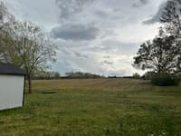

Tad Johnson
Me, Myself, and I
My name is Tad Johnson. I currently live in Trenton, Tennessee. My family moved here last year from Salt Lake City, for a mountain of reasons. I have three children, ages 21, 13, and 8 years old. My oldest daughter still lives in Utah, but the other two reside with my wife and I. The move to Tennessee, wasn't easy, but it was well worth it to be able to watch our kids grow up and finally feel safe. Prior to me meeting thier mother there was some scary incidents that they had to suffer through, and now they are in a new and safe place. As for me, I have always wanted to learn how to program and develop web pages, and so here I am following my dream. I have worked around computers (building, fixing, repairing) since 1997, but was busy playing cop until 2015. In 2016, I obtained employment at a local hospital working in desktop support, have since obtained a few certificates, but now have the ability to starting learning and following my dream.
Here is a picture of my backyard here in Tennessee. Not a mountin in sight, but moving from Utah, where you could stand on the roof and see nothing but houses in every direction. The population in my new city is less than the population that lived within my ward boundries in Utah. Here That is just one of the perks of moving here.
